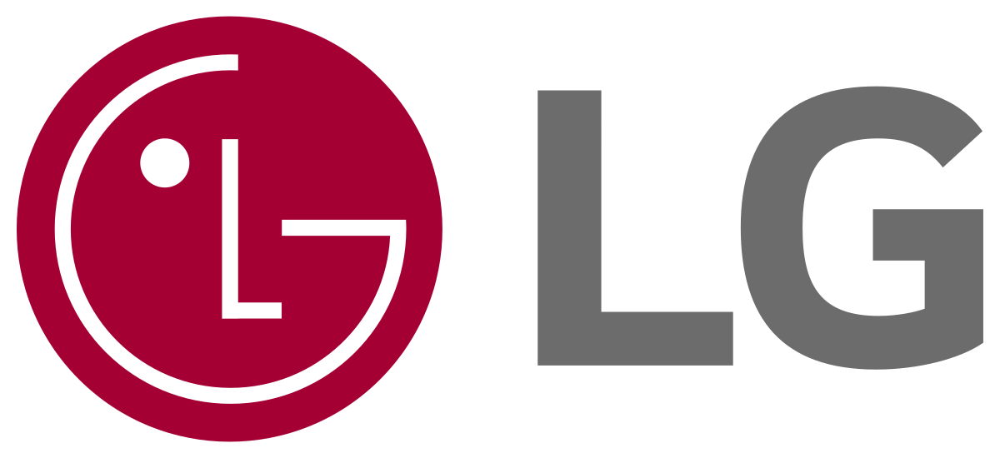
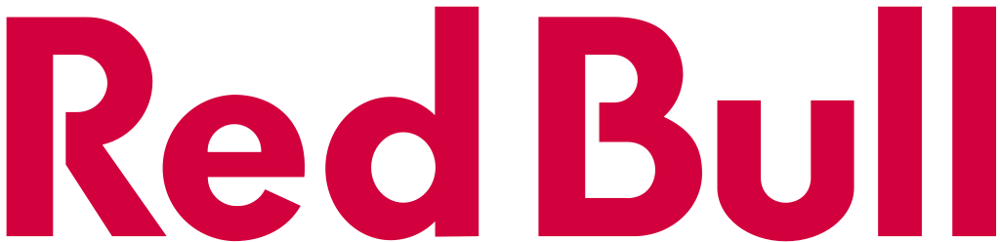
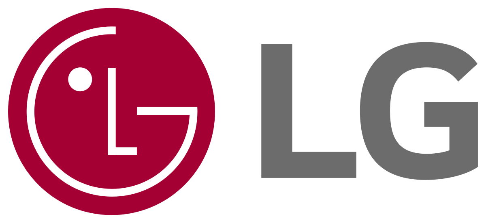
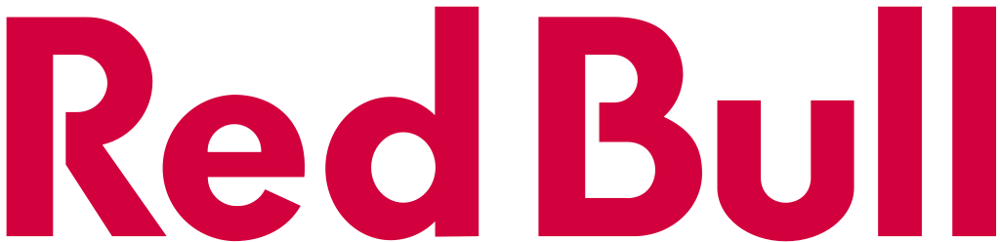

A LCK (League of Legends Champions Korea) é a principal liga de League of Legends da Coreia do Sul, considerada uma das mais competitivas e prestigiadas do mundo. Fundada em 2012, a LCK reúne os melhores times coreanos, conhecidos por seu estilo de jogo disciplinado, estratégico e de altíssimo nível técnico. Grandes organizações como T1, Gen.G e KT Rolster já marcaram história no campeonato. A liga serve como classificatória para torneios internacionais, como o MSI e o Mundial (Worlds), sendo um dos pilares da cena profissional de LoL.
 


